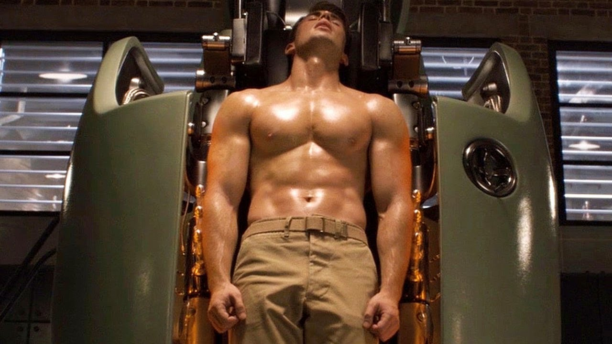
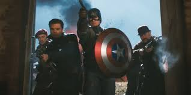
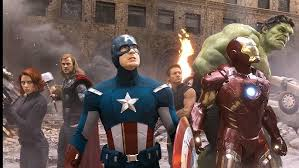
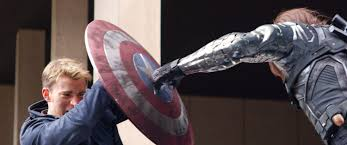
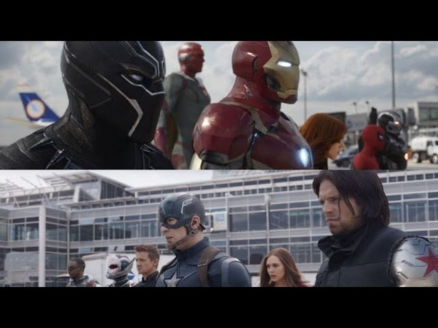
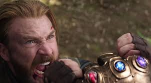
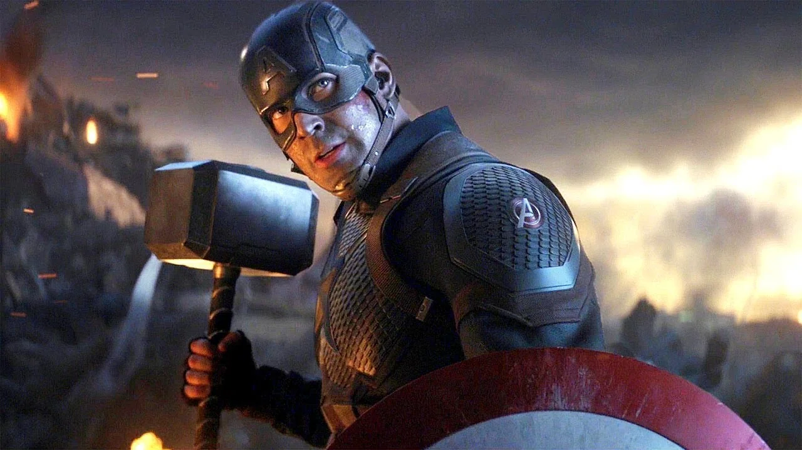
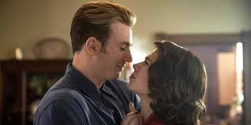

Just A Kid From Broklyn
Before the serum transformed him into Captain America, Steve Rogers was a frail but determined young man. He yearned to serve his country, but his physical limitations often held him back. Despite his challenges, he never gave up on his dream. His unwavering spirit and selfless nature caught the attention of those involved in Project Rebirth, a secret government experiment that would change his life forever.
Just A Lab Experiment
Steve's dream of serving his country was dashed when he was repeatedly rejected from the military due to his physical limitations. Undeterred, he continued to seek ways to contribute to the war effort. His unwavering patriotism and determination caught the attention of a secret government project known as Project Rebirth. Selected for the experiment, Steve was injected with a serum that transformed him into a superhuman. The serum enhanced his physical abilities, granting him superhuman strength, speed, agility, and durability. His frail body was now a paragon of physical fitness, capable of feats that seemed impossible.
Not A Good Soldier But A Good Human
As Captain America, Steve Rogers became a symbol of hope and inspiration during World War II. He led the Howling Commandos, a team of elite soldiers, on daring missions behind enemy lines. His courage, leadership, and unwavering patriotism made him a formidable opponent to the Nazis. One of the most memorable moments during this period was his iconic confrontation with the Red Skull, a Nazi agent who sought to harness the power of the Tesseract. Steve's unwavering belief in freedom and justice led him to defeat the Red Skull and prevent him from unleashing his destructive plans.
The Man Out Of Time
After World War II, Steve Rogers continued to fight for justice. He became a founding member of the Avengers, a team of extraordinary individuals united by their shared desire to protect the world. As Captain America, he served as the team's moral compass, always reminding his fellow Avengers of the importance of compassion, empathy, and the human cost of their battles.
You are my friend!
Steve Rogers' life took a dark turn when he discovered that his former friend, Bucky Barnes, had been brainwashed into becoming the deadly assassin known as the Winter Soldier. Haunted by the past, Steve struggled to reconcile his loyalty to Bucky with his duty to protect the world. The search for Bucky led Steve on a dangerous journey that ultimately brought him face-to-face with his former friend. Despite the pain and betrayal, Steve refused to let hatred consume him. He chose the path of forgiveness and redemption, ultimately rescuing Bucky from his tormentors and restoring their friendship. 6. Civil War
Price Of Freedom Is High
A rift within the Avengers led to a devastating civil war, pitting Steve Rogers against his former teammate, Tony Stark. Caught in the crossfire, Steve Rogers found himself torn between his loyalty to his friends and his belief in what is right. The conflict was a test of Steve's character and his unwavering commitment to his ideals. Despite the personal cost, Steve remained true to his convictions, even when it meant sacrificing his friendship with Tony Stark.
If You Need Me....I'll Be There
The Avengers faced their greatest threat yet when Thanos, a cosmic tyrant, arrived on Earth to collect all six Infinity Stones. Steve Rogers and the Avengers fought bravely, but were ultimately defeated and Thanos succeeded in wiping out half of all life in the universe. Steve Rogers' loss of his friends and allies was a devastating blow. However, he refused to give up hope. He knew that the Avengers must find a way to undo Thanos' actions and restore the universe.
Avengers... Assemble!
The surviving Avengers traveled through time to gather the Infinity Stones and undo Thanos' actions. In a climactic battle, Steve Rogers wielded Mjolnir, the hammer of Thor, and led the Avengers to victory. Thanos was defeated, and the universe was restored. Steve Rogers' sacrifice and leadership during this final battle cemented his status as a legendary hero. His unwavering belief in the power of unity and the importance of hope inspired millions around the world.
I Can Do This All Day
After the defeat of Thanos, Steve Rogers returned to the past to live out his life with Peggy Carter. While he may have left the Avengers behind, his legacy as Captain America will forever live on.Steve Rogers' decision to return to the past was a bittersweet one. He sacrificed his chance to be with his loved ones in the present, but he found peace and happiness in his reunion with Peggy. His story serves as a reminder that even the greatest heroes sometimes need to find their own peace.